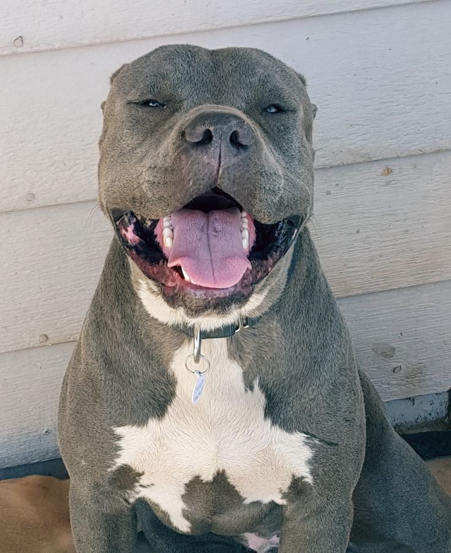
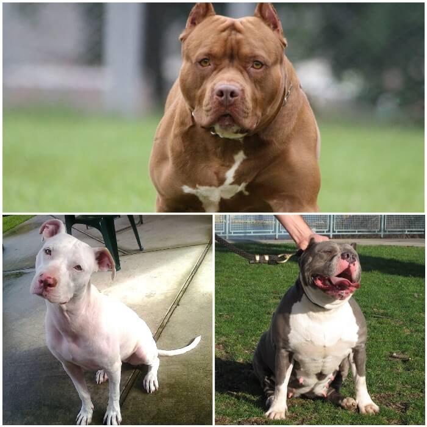

Muchas personas tienden a ver al pitbull como una de las razas de perros más peligrosas. Sin embargo, esta creencia no es más que una visión errónea, puesto que un perro será peligroso o no en función de la educación y la atención que le preste su dueño. Además de esto, también hay quienes desconocen los tipos de razas de perros pitbull y piensan que se trata solo de un perro con las mismas características.
La historia del pitbull no debe pasarse por alto. Este perro fue el resultado de distintos cruces que se hiceron entre terriers y bulldogs, en el intento de combinar en un perro las características que poseía cada raza: la anatomía y fuerza del bulldog, el carácter del terrier, etc.
Pitbull Blue

El pitbull blue es una variedad concreta que gusta por su manto y color de ojos concretos. Cierto es que este perro no deja a nadie indiferente, ya sea por su aspecto o por su gran personalidad.
Si sientes curiosidad por esta raza y quieres saber más sobre ella, aquí tienes todos los detalles que necesitas. No te pierdas nada, pues este pitbull requiere cuidados específicos para poder garantizar su salud y bienestar durante muchos años.
El pitbull blue es una variedad del american pitbull terrier que tiene la particularidad de poseer un manto grisáceo azulado, de ahí su nombre (blue significa “azul” en inglés). Los ojos también tienen una coloración concreta, que va del tono avellana al azul.
El origen de la palabra pitbull es triste. Pit, que significa “foso” en inglés, está presente en la denominación debido a que, tras la prohibición de las peleas de perros (bull fighting) en Inglaterra en 1835, se metía a estos canes en fosos para que mataran ratas a contrarreloj.
Antes de esta práctica, bull terrier era el nombre con el que se conocía a estos canes. Esta denominación responde a otra práctica cruel, en la que se soltaba a estos perros para que pelearan contra toros. De esto y las carreras por matar ratas salió la palabra pitbull.
La variedad pitbull blue procede del cruce de esta raza con el blue paul terrier, un can ya extinto descubierto por el pirata británico Paul Jones. Este can tenía la coloración grisácea que hoy exhibe la raza que nos ocupa.
Pitbull Terrier Americano

El American Pitbull Terrier es el Pitbull por excelencia. Se cree que el resto de razas Pitbull fueron creadas a partir de él. Procede del cruce entre un Bulldog Inglés y un American Terrier.
Los American Pitbull Terrier son perros amistosos y equilibrados, muy inteligentes y trabajadores. Se llevan muy bien con los niños.
Contrariamente a lo que su fama podría indicar, no se trata de buenos perros guardianes, porque suelen ser cariñosos con todo el mundo. Sin embargo, defenderán a su familia hasta la muerte si es necesario.
Son perros para personas que puedan dedicarles mucho tiempo y atención. Necesitan un entrenamiento riguroso y mucha disciplina, suave pero consistente. Es importante socializarlos durante su etapa de cachorros, y que reciban un adiestramiento específico para limitar su tendencia a la dominancia y su terquedad. Se trata de animales muy fuertes que necesitan estar muy bien entrenados para no constituir un peligro.
El American Pitbull Terrier es más alto que otros Pitbull. Su peso oscila entre los 13 y los 25 kilos. Es un gran masticador. Proporciónale juguetes resistentes y duraderos, ya que sus mandíbulas son muy poderosas
Pitbull Bull Terrier
Una de sus características físicas más notables son sus ojos triangulares. Puede llegar a pesar 35 kilos y no soporta bien los climas fríos y húmedos.
El Bull Terrier es un perro testarudo pero amable, que necesita el afecto y compañía de su familia. Es muy valiente y tiene una gran vitalidad. Por ello, se trata de un perro ideal para familias activas.
Necesita un dueño que sea un líder fuerte y efectivo y sepa entrenarlo con amabilidad y contundencia. Al igual que otros Pitbull, es un perro que disputa la dominancia y puede acabar estableciendo sus propias reglas. No se trata de un perro para dueños tímidos o para alguien que no tenga experiencia con perros.
Por lo demás, se trata de un perro muy divertido y leal, que requiere estimulación mental y ejercicio físico, y siempre estará dispuesto a salir en busca de aventuras.
Se lleva bien con los niños, pero no hay que olvidar que se trata de un perro que tiene mucha fuerza y no es muy tolerante si se le molesta, pudiendo reaccionar con agresividad.
Es importante que enseñes a los niños a interactuar con ellos y que supervises los juegos, sobre todo si tus hijos son muy pequeños. Son excelentes compañeros de juego para niños mayores activos, ya que tienen una energía ilimitada.
Sin embargo, pueden mostrarse agresivos con niños que no conoce, sobre todo si hay muchos gritos o luchas.
Pitbull Bully Americano
Esta raza de perro pitbull tiene un aspecto físico rudo e imponente. Es uno de los tipos de pitbull más bajos, aunque su cabeza y cuerpo son grandes teniendo en cuenta su altura. Esta raza no está reconocida en todas las organizaciones internaciones, ya que algunas de consideran a este perro como u híbrido o mestizo.
También incluido en este grupo, no cabe duda de que el “bully” es un perro muy peculiar. Es el resultado del cruce entre el pitbull terrier americano, el Staffordshire terrier y los bulldogs ingleses. Puede medir entre 16 y 20 pulgadas, alcanzando un peso proporcional a su altura.
El bully americano posee un gran instinto de lucha y un fuerte impulso por el trabajo duro, ambos rasgos heredados de sus padres, pero eso no le impide ser una excelente mascota para la familia.
Las características físicas del American Bully están muy abiertas, principalmente porque es una raza que cuenta con cuatro variedades: Standart, Classic, Pocket y XL. Todas estas tipologías tienen en común varios rasgos: una potente musculatura –con un pecho hondo y marcado-, una enorme cabeza en forma de cubo, una mandíbula fuerte, un cuerpo compacto –donde el alto y el largo del animal son muy parecidos- y una cola no muy gruesa de tamaño medio.
El pelaje de todas estas razas es corto y está sostenido en una piel flexible, gruesa y dura. Entre los tonos de color más comunes, encontramos el champán, azul, canela, chocolate, negro, rojo, blanco, dorado y combinaciones tricolores entre todos ellos.